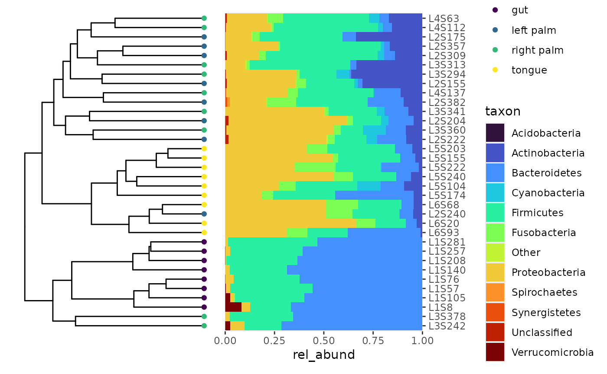

CookBook
cookbook.RmdTechnique 1: Adding a bray-curtis tree to a bar plot
library(bubbler)
library(phyloseq)
# library(tidyverse)
library(dplyr)
library(tibble)
library(ggplot2)
library(vegan)
library(ape)
library(patchwork)
library(viridis)
# library(ggtree) loading ggtree causes namespace issues
# otufile = system.file("extdata", "gp_otu_table_rand_short.txt.gz", package="phyloseq")
# mapfile = system.file("extdata", "master_map.txt", package="phyloseq")
# trefile = system.file("extdata", "gp_tree_rand_short.newick.gz", package="phyloseq")
# rs_file = system.file("extdata", "qiime500-refseq.fasta", package="phyloseq")
# qiimedata = import_qiime(otufile, mapfile, trefile, rs_file, verbose = FALSE)
counts_q <- system.file("extdata", "qiime", "table-dada2.qza", package = "bubbler")
taxa_q <- system.file("extdata", "qiime", "taxonomy.qza", package = "bubbler")
metadata_q <- system.file("extdata", "qiime", "sample-metadata.tsv", package = "bubbler")
# Import the data compute bray-curtis dissimilarity matrix and cluster
# asv <- data.frame(phyloseq::otu_table(qiimedata))
asv <- asv_data_qiime(counts_q)
asv <- asv %>%
as.data.frame() %>%
column_to_rownames(var = "sample_id") %>%
as.matrix()
bc_dist <- vegan::vegdist(asv, method = "bray")
hc <- hclust(bc_dist, method = "average")
# Have to convert from a phylo to a ggtree object to get at the tip order.
phylo_tree <- as.phylo(hc)
ggtree_plot <- ggtree::ggtree(phylo_tree)
# Get the tip order.
tip_order <- ggtree_plot$data %>%
filter(isTip == TRUE) %>%
arrange(y) %>%
select(label) %>%
rev() %>%
pull()
# Make the tree
p1 <- ggtree::ggtree(phylo_tree) +
theme(plot.margin = margin(0, -5, 0, 0))
# Make the relative abundance table and the sideways barplot.
q <- rel_abund_qiime(counts_q, taxa_q, metadata_q) %>%
pool_taxa(n_taxa = 12, keep_metadata = TRUE)
p2 <- q %>%
arrange_variable(levels = tip_order) %>%
bar_plot(position = "fill", color = "body_site") +
labs(x = NULL) +
scale_x_discrete(position = "top") +
scale_y_continuous(expand = c(0,0)) +
coord_flip() +
theme(plot.margin = margin(0, 0, 0, 5)) +
scale_fill_viridis_d(option = "turbo")
p1 | p2